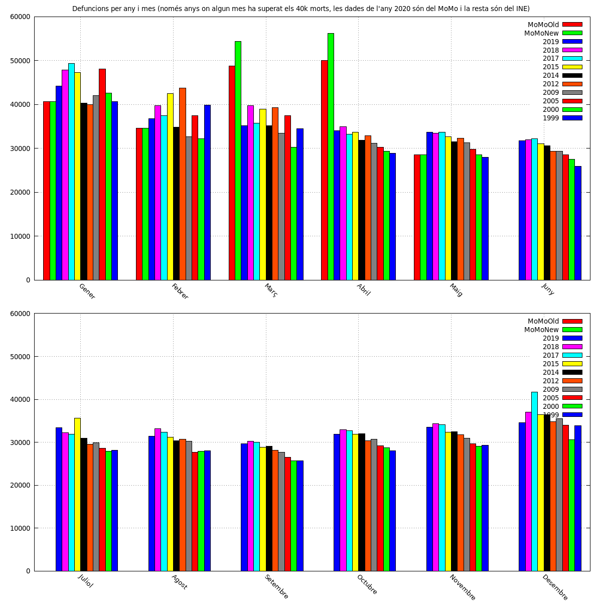
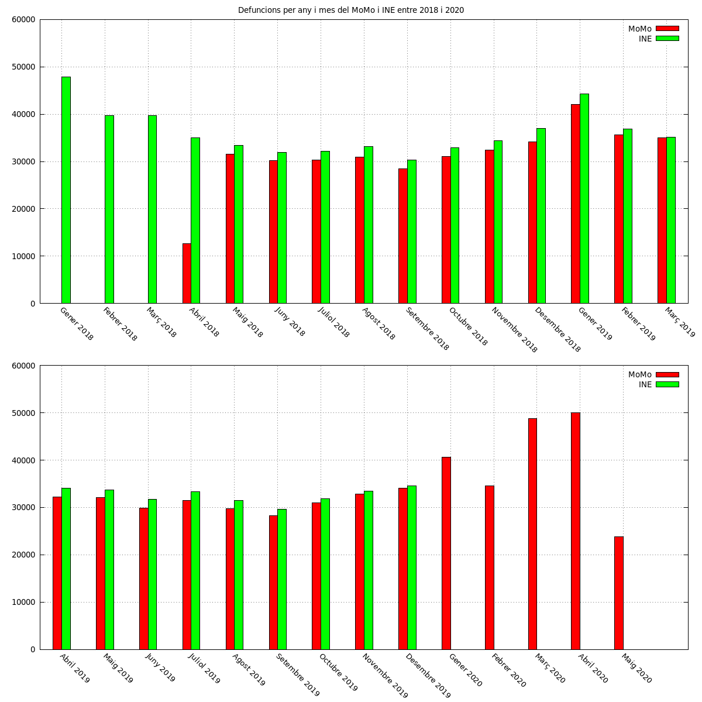
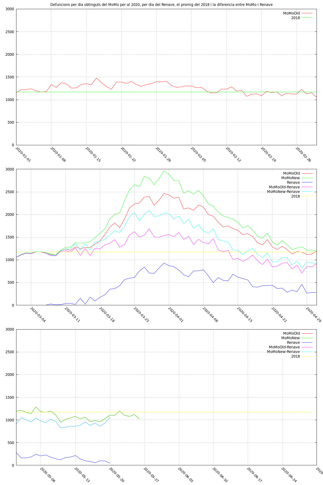
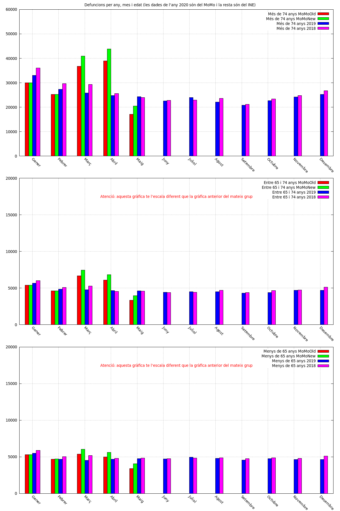
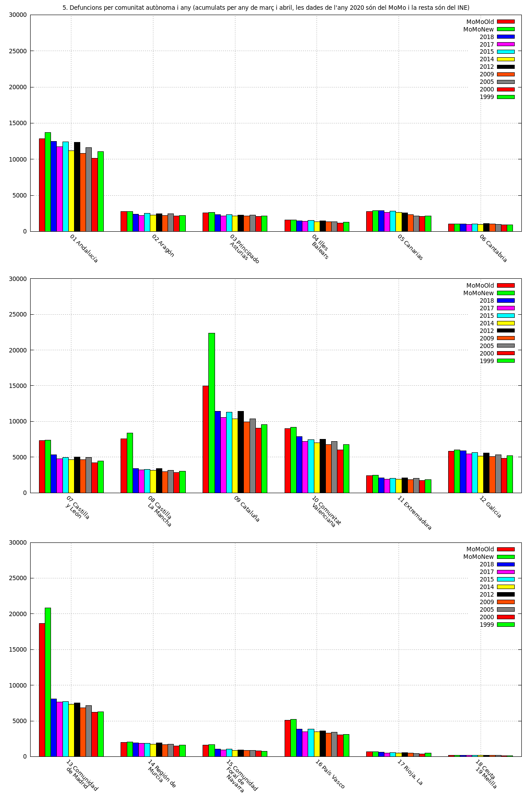
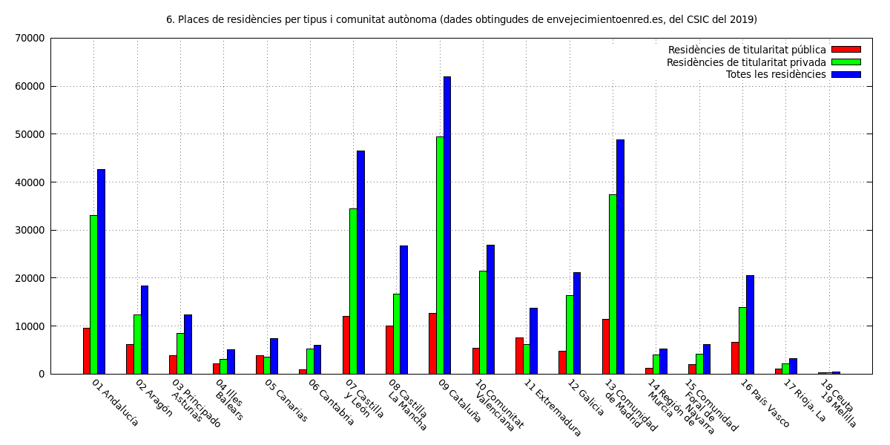
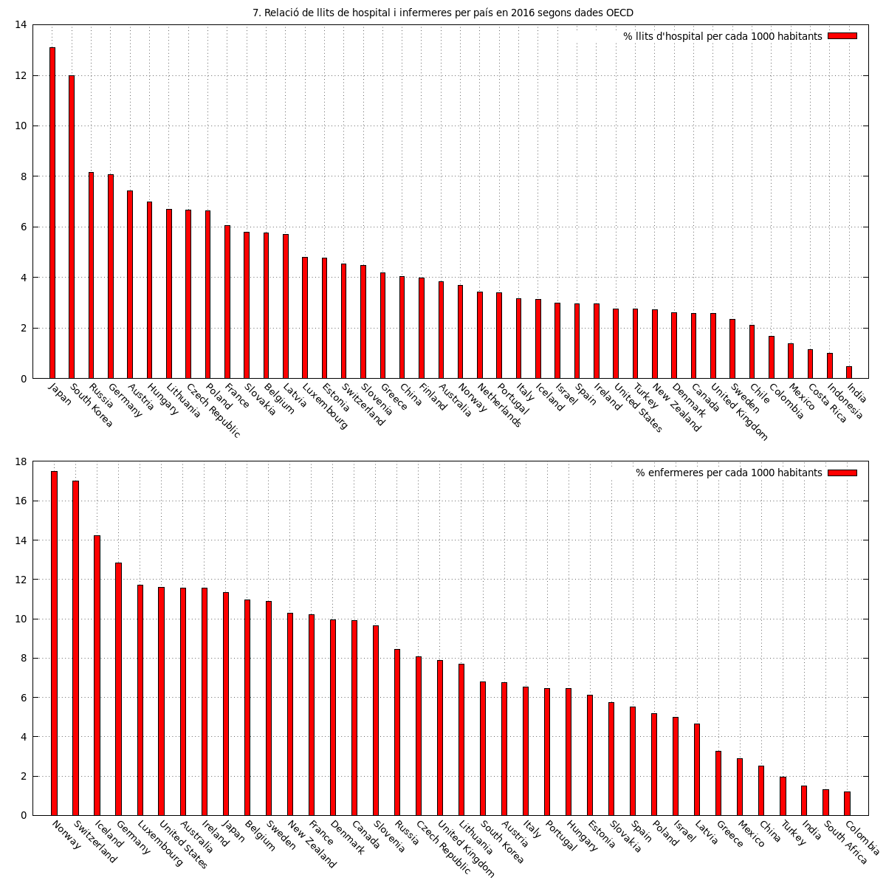

EN
ES
CA
Informació útil d'Espanya sobre l'impacte de covid-19: gràfics de defuncions per any, origen de les dades, acumulats diaris, per edat, per comunitat autònoma i més
Atenció: el 27 de maig de l'any 2020 es van corregir les dades del MoMo, per poder observar aquesta correcció s'ha afegit la variable Fake que conté les dades de MoMo anteriors sense la correcció per als mesos de Març i Abril de l'any 2020
Defuncions per any i mes (només anys on algun mes ha superat els 40k morts, les dades de l'any 2020 són del MoMo i la resta són del INE)

Defuncions per any i mes del MoMo i INE entre 2018 i 2020

Defuncions per dia obtinguts del MoMo per al 2020

Defuncions per any, mes i edat (les dades de l'any 2020 són del MoMo i la resta són del INE)

Defuncions per comunitat autònoma i any (acumulats per any de març i abril, les dades de l'any 2020 són del MoMo i la resta són del INE)

Places de residències per tipus i comunitat autònoma (dades obtingudes de envejecimientoenred.es, del CSIC del 2019)

Relació de llits de hospital i infermeres per país en 2016 segons dades OECD
